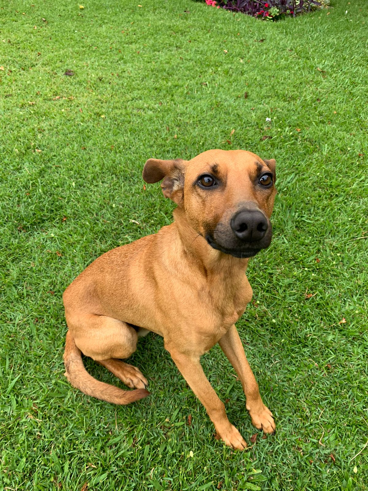

Quem somos ❤️
Acapra foi formada em maio de 1997 por um grande grupo de experientes cuidadores de vida selvagem, para atender às necessidades específicas da vida selvagem urbana na área metropolitana de Sydney.Somos licenciados pelo NSW National Parks & Wildlife Service para resgatar, reabilitar e soltar animais nativos doentes, feridos e órfãos. Também nos esforçamos para educar a comunidade, em todos os níveis, sobre a necessidade de proteger nossos animais nativos e preservar seus habitats. Nossa organização é uma instituição de caridade registrada e é operada inteiramente por voluntários. Oferecemos este serviço de resgate e aconselhamento 24 horas por dia, 7 dias por semana.
Nossa Missão ❤️

Nossa missão é cuidar, proteger e reabilitar animais selvagens nativos que estejam doentes, feridos ou órfãos, garantindo que tenham a melhor chance possível de retornar à natureza. Além disso, a Sydney Wildlife se dedica a educar a comunidade sobre a importância da preservação da fauna nativa e do seu habitat, promovendo a conscientização e incentivando ações para a proteção da vida selvagem. Acreditamos que cada animal tem um papel essencial no equilíbrio ecológico, e por isso trabalhamos incansavelmente para oferecer os cuidados necessários, desde atendimento veterinário até reabilitação especializada. Através de programas educativos, buscamos inspirar pessoas a respeitarem e conviverem de forma harmoniosa com a vida selvagem, criando um futuro mais sustentável para todos.
História ❤️
A história da Acapra Brusque é um reflexo de dedicação, amor e compromisso com os animais. Tudo começou quando um grupo de pessoas, sensibilizadas pelo crescente número de cães abandonados e em situação de vulnerabilidade na região de Brusque, decidiu unir forças para fazer a diferença. Movidos pela paixão pelos animais e pela vontade de transformar realidades, eles fundaram a Acapra com um propósito claro: resgatar, proteger e oferecer uma segunda chance a cães que sofriam com abandono, maus-tratos ou negligência.
Desde o início, a Acapra Brusque se destacou por seu trabalho incansável e pela busca por soluções sustentáveis para o problema do abandono animal. A instituição começou pequena, com poucos recursos, mas com um grande coração. Os primeiros resgates foram feitos com doações da comunidade e muito esforço voluntário. Aos poucos, a Acapra foi ganhando visibilidade e conquistando o apoio de pessoas que compartilhavam da mesma causa.
Com o tempo, a instituição se estruturou melhor, criando um abrigo temporário para os cães resgatados. Lá, os animais recebem cuidados veterinários, alimentação de qualidade, carinho e treinamento comportamental para que possam se recuperar física e emocionalmente. O objetivo sempre foi claro: preparar esses cães para uma nova vida, em um lar amoroso e responsável.
A Acapra Brusque também se tornou uma referência na promoção da adoção responsável. A equipe trabalha para conscientizar a comunidade sobre a importância de adotar, em vez de comprar, e sobre os cuidados necessários para garantir o bem-estar dos animais. Além disso, a instituição realiza campanhas de castração e eventos de conscientização para combater o abandono e os maus-tratos.
Hoje, a Acapra Brusque é um símbolo de esperança para centenas de cães que já passaram por suas portas. Cada adoção realizada é uma vitória, uma prova de que é possível transformar vidas com amor e dedicação. A instituição continua crescendo, sempre com o mesmo propósito: construir um mundo onde nenhum cachorro fique para trás.
Seja através de adoções, doações ou trabalho voluntário, a Acapra Brusque convida todos a fazerem parte dessa missão. Juntos, podemos escrever um futuro mais justo e cheio de amor para os animais.